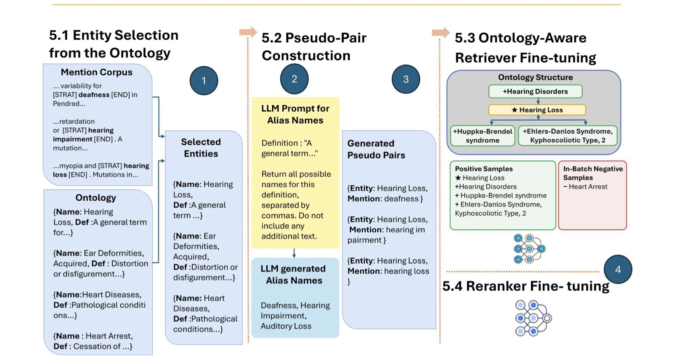
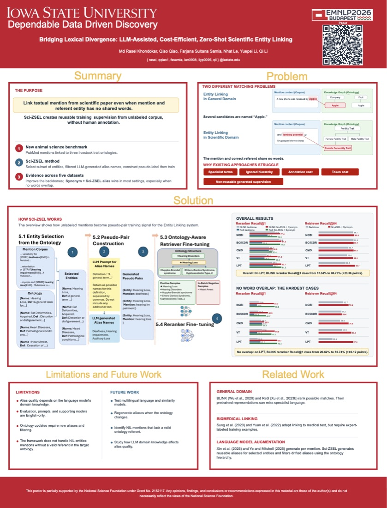
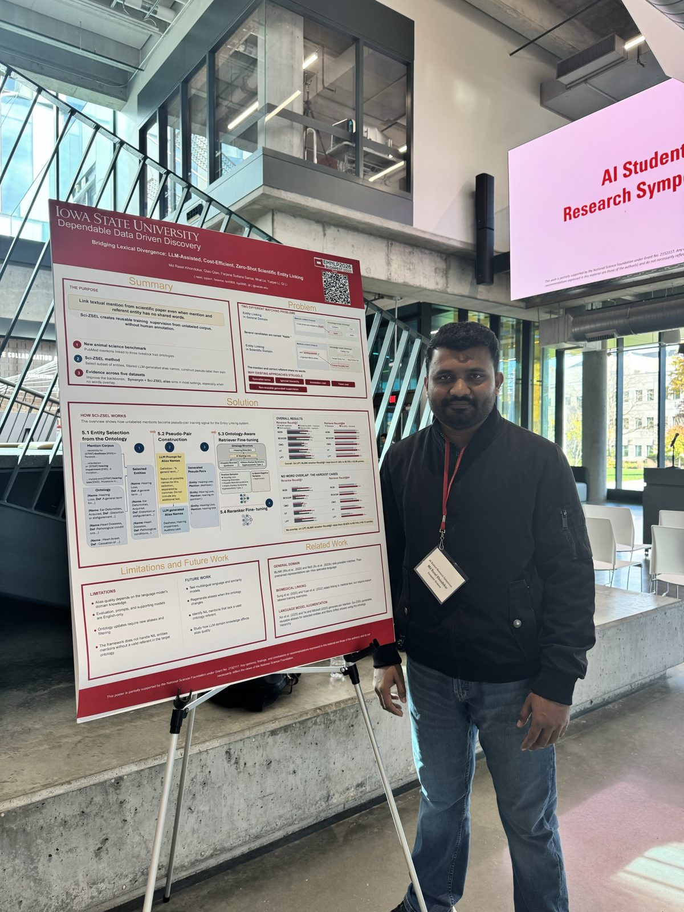

Findings of EMNLP 2026 · Budapest
Bridging Lexical Divergence: LLM-Assisted, Cost-Efficient, Zero-shot Scientific Entity Linking
Department of Computer Science, Iowa State University
“…and lambing potential of Uruguayan Merino sheep”
Female Fecundity Trait (child of Fertility Trait)
Abstract
Scientific domain entity linking (EL) differs from general domain EL because mentions and entity names often lack lexical overlap. Another challenge is that specialized terminology is used in the scientific domain, which is rarely encountered in models pretrained on general domains. Therefore, models trained on general domains transfer poorly to scientific domains. To address this, in-domain fine-tuning is the natural remedy. However, many scientific domains lack expert-annotated data, motivating the need for a zero-human-annotation approach. Existing zero-shot methods heavily rely on LLMs to generate aliases across entire mention corpora, which incurs substantial computational cost, and those methods provide no mechanism to filter out noise from LLMs.
To address these challenges, we propose Sci-ZSEL, a framework that selectively generates entity aliases with an LLM to control computational cost, and applies an ontology-aware filter to remove aliases that semantically drift toward ontology neighbors. Then, filtered aliases are used to construct pseudo-labeled mention-entity pairs for fine-tuning. To enable evaluation of EL under low lexical overlap, we also release a new animal science EL benchmark linked to three livestock trait ontologies, where mentions and entities exhibit substantially lower lexical overlap than in existing benchmarks. Across five benchmarks, Sci-ZSEL outperforms the non-fine-tuned baseline, is most useful on non-overlapping mentions, and combining it with curated synonyms gives the best performance in most settings.
How Sci-ZSEL works
Instead of calling an LLM once per corpus mention, whose cost grows with the corpus, Sci-ZSEL generates aliases on the entity side for a small set of selected entities. Those aliases are reusable across any new corpus that draws on the same ontology.

- Entity selection from the ontologyPick a subset of ontology entities whose names appear as mentions in the unlabeled corpus.
- Pseudo-pair constructionPrompt an LLM with each entity's definition to list alternative names. The aliases link real mentions back to the original entity name.
- Ontology-aware retriever fine-tuningFilter aliases that drift toward parent, child or sibling concepts, then fine-tune the bi-encoder with hierarchy-aware positives and in-batch negatives.
- Reranker fine-tuningFine-tune a cross-encoder (BLINK or ReS) on the same pseudo-pairs to rank the retrieved candidates.
A harder benchmark: animal science
We release three expert-curated, test-only datasets built from PubMed articles in AnimalQTLdb. Each links trait mentions to one of three livestock trait ontologies: the Clinical Measurement Ontology (CMO), the Vertebrate Trait Ontology (VT), and the Livestock Product Trait Ontology (LPT). Compared with the biomedical benchmarks, many more of these mentions share no words with their entity, and the ontologies list far fewer synonyms per entity.
| Dataset | Ontology | Samples | Unique mentions | Unique entities | No-overlap % | Synonyms / entity |
|---|---|---|---|---|---|---|
| NCBI Disease | MEDIC | 960 | 287 | 190 | 22.92 | 9.57 |
| BC5CDR | MeSH | 9,465 | 2,084 | 1,267 | 24.16 | 2.13 |
| QTL-CMO NEW | CMO | 2,032 | 458 | 107 | 43.45 | 1.07 |
| QTL-VT NEW | VT | 1,688 | 500 | 111 | 57.11 | 0.91 |
| QTL-LPT NEW | LPT | 722 | 233 | 103 | 45.01 | 0.89 |
Results
Fine-tuning with Sci-ZSEL aliases plus curated synonyms improves every backbone on all five datasets. The gains are largest when the mention and entity share no words, which is the case Sci-ZSEL was built for. Switch between views below.
Show as table
| Dataset | Baseline | Sci-ZSEL + Synonym | Gain |
|---|
Talk & poster
An 8-minute presentation of the paper for EMNLP 2026, given by Md Rasel Khondokar. The poster was also presented at Iowa State's AI Student Research Symposium on November 9, 2026.


Citation
@inproceedings{khondokar-etal-2026-bridging,
title = {Bridging Lexical Divergence: {LLM}-Assisted, Cost-Efficient, Zero-shot Scientific Entity Linking},
author = {Khondokar, Md Rasel and Qiao, Qiao and Samia, Farjana Sultana and Le, Nhat and Li, Yuepei and Li, Qi},
booktitle = {Findings of the Association for Computational Linguistics: EMNLP 2026},
year = {2026},
pages = {27231--27249},
publisher = {Association for Computational Linguistics}
}
This work was partially supported by the National Science Foundation.